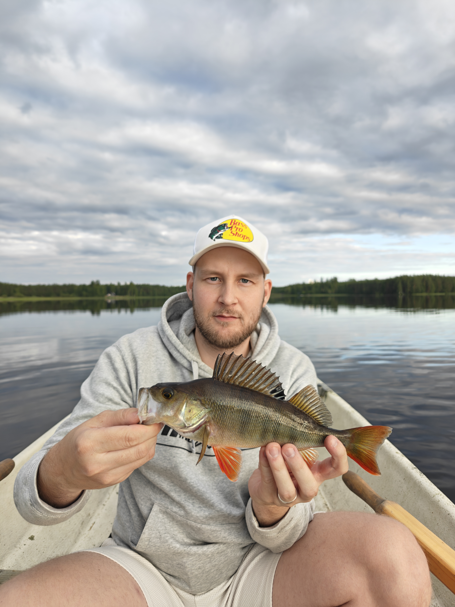
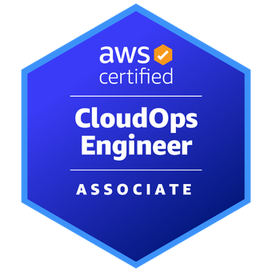
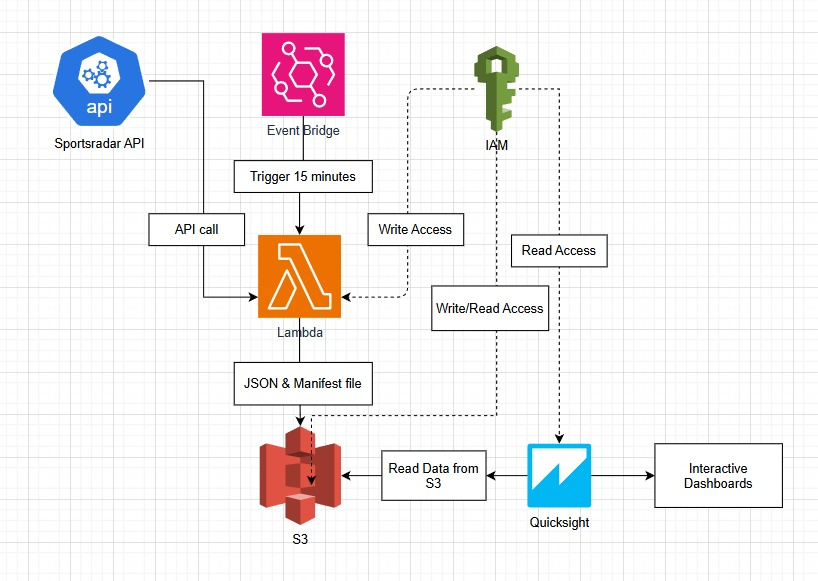
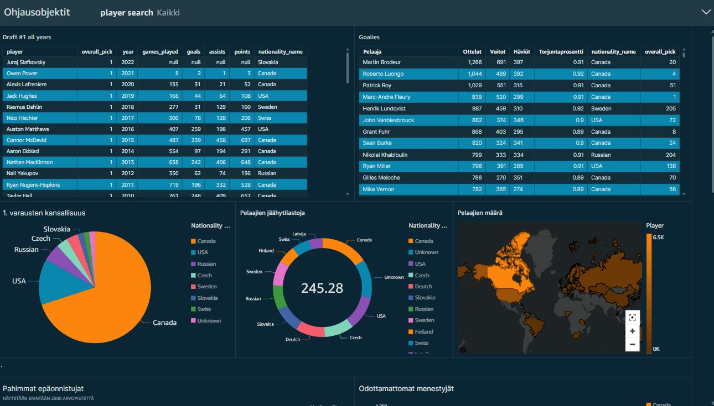
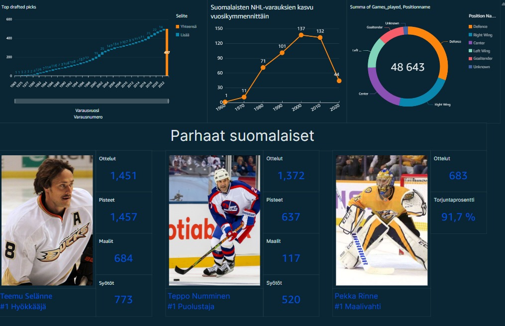
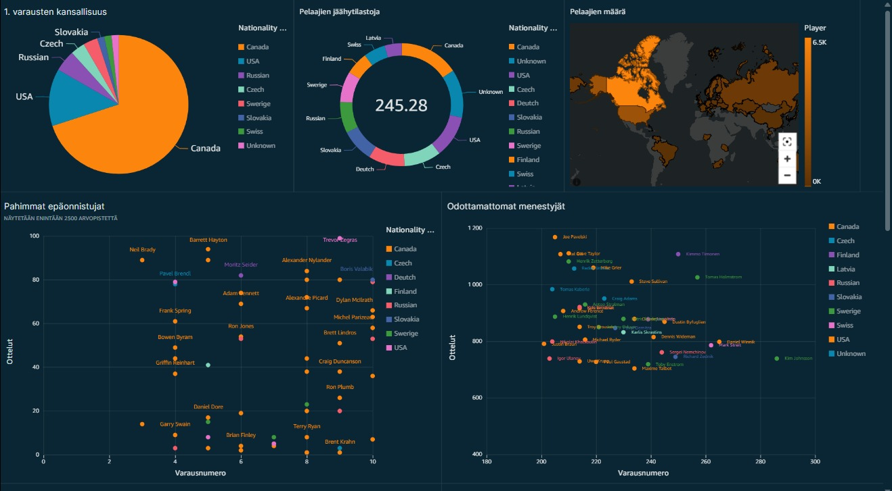

Juho Leppäkangas
Tietojenkäsittelyn tradenomi – pilvipalvelut
Olen tietojenkäsittelyn tradenomi, joka on erikoistunut pilvipalveluihin ja datan käsittelyyn muunmuassa AWS-ympäristössä. Minulla on käytännön kokemusta datan keräämisestä, käsittelystä ja visualisoinnista osana oikeita projekteja, ja ymmärrän datan koko elinkaaren datan ingestoinnista analyysiin ja päätöksenteon tukemiseen.

Minusta
Olen tietojenkäsittelyn tradenomi ja alanvaihtaja, joka on rakentanut tietoisesti uutta uraa IT-alalle. Alanvaihto on opettanut minulle paljon uuden oppimisesta ja vahvistanut haluani kehittää itseäni ja tulla alan ammattilaiseksi.
Luonteeltani olen positiivinen, huumorintajuinen ja helposti lähestyttävä. Minulla on hyvät vuorovaikutustaidot, ja viihdyn hyvin sekä itsenäisessä työskentelyssä että osana tiimiä. Työskentelyssä pidän tärkeänä avointa kommunikaatiota ja hyvää ilmapiiriä.
Olen utelias ja käytännönläheinen oppija. Erityisesti teknisten ongelmien selvittäminen kiinnostaa minua – pidän siitä, että saan ottaa uuden teknologian haltuun ja selvittää, miten sitä voidaan hyödyntää käytännössä. En myöskään pelkää tarttua itselleni ennestään tuntemattomiin asioihin.
IT-alalla minua kiinnostavat erityisesti pilvipalvelut, data ja tietoturva. Tavoitteenani on päästä kehittämään osaamistani käytännön työssä ja kasvaa monipuoliseksi IT-alan ammattilaiseksi.
Vapaa-ajalla rentoudun kalastuksen ja lenkkeilyn parissa. Pelaan myös jonkin verran videopelejä.
- Koulutus: Jyväskylän ammattikorkeakoulu, Tietojenkäsittelyn tradenomi, 2025
- Sijainti: Jyväskylä, valmis muuttamaan / etätyöhön
- Kielet: suomi (äidinkieli), englanti (hyvä), espanja (alkeet)
AWS-sertifikaatit

AWS Certified Cloud Practitioner
Suoritettu: 8/2025

AWS Certified Solutions Architect – Associate
Suoritettu: 10/2025
Työharjoittelu
08/2025 – 12/2025
Pilvipalvelut, Skillwell Oy
Työharjoittelussa työskentelin AWS-pilvipalveluiden ja tietoturvadatan parissa. Pääsin työskentelemään muun muassa AWS Security Laken, AWS Lake Formationin, Amazon Athenan ja Amazon QuickSightin kanssa. Hyödynsin Athena SQL -kyselyitä datan käsittelyssä ja rakensin QuickSightilla dashboardeja, joiden avulla sisäisten AWS-tilien haavoittuvuuksia ja poikkeamia voitiin visualisoida. Dashboardit helpottivat tietoturvariskien seurantaa ja analysointia.
Osallistuin myös valmiin Amazon Bedrock -chatbotin integrointiin Security Lake -dataan. Tavoitteena oli mahdollistaa datan tutkiminen luonnollisella kielellä suomeksi. Integraation yhteydessä tein tarvittavia koodimuutoksia, kuten AWS-alueiden (region) vaihtamisen, OpenSearch Collectioniin tarvittavien indeksien luomisen sekä agentin muokkaamisen käyttämään Claude 3 -mallia.
Harjoittelun aikana tutustuin lisäksi Terraformiin ja Terragruntiin infrastruktuurin hallinnassa. Hyödynsin Dockeria paikallisen testiympäristön rakentamiseen ja eri palveluiden ajamiseen LocalStackin avulla. Lisäksi tutustuin AWS Control Toweriin ja sen hyödyntämiseen AWS-ympäristöjen hallinnassa.
Opinnäytetyö
AWS QuickSight ja datajärvet: Tietojärvidatan visualisointi Quicksightissa
Opinnäytetyössäni tutkin AWS Data Lake -ratkaisujen toimintaa ja keskityin erityisesti datan visualisointiin. Työn alussa tutustuin Amazon QuickSight -palveluun ja sen ominaisuuksiin rakentamalla koontinäyttöjä valmiin NHL Draft -datasetin pohjalta.
Tämän jälkeen rakensin automatisoidun dataputken, jossa AWS Lambdalla haettiin NHL-dataa Sportradar API ja tallennettiin se Amazon S3 partitioituna päivämäärän mukaan. Lambda-funktio ajastettiin suoritettavaksi päivittäin aamuisin, jolloin edellisen yön NHL-otteluiden tulokset olivat saatavilla.
Lopuksi rakensin interaktiivisen koontinäytön, jonka avulla yön aikana pelattujen NHL-otteluiden tuloksia ja dataa pystyi tarkastelemaan visuaalisesti. Työssä yhdistyivät datan automatisoitu kerääminen, AWS pilvipalvelut, datan tallennus ja visualisointi.



